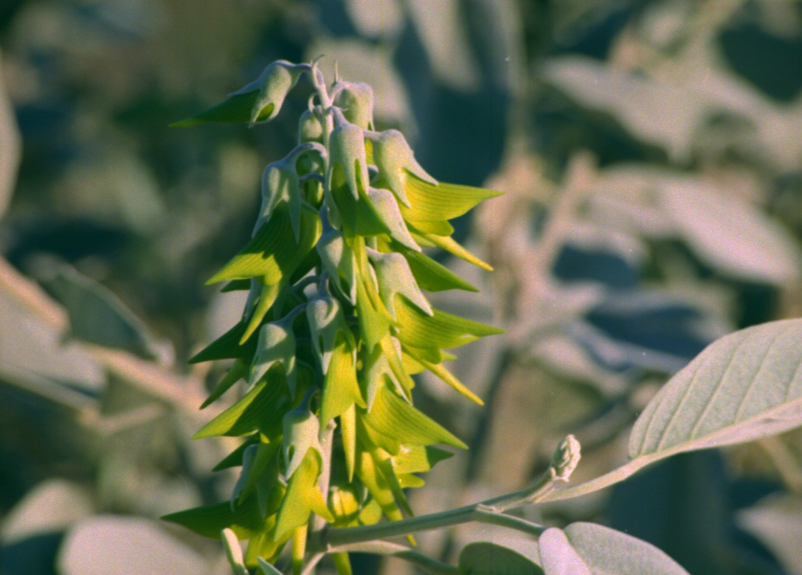
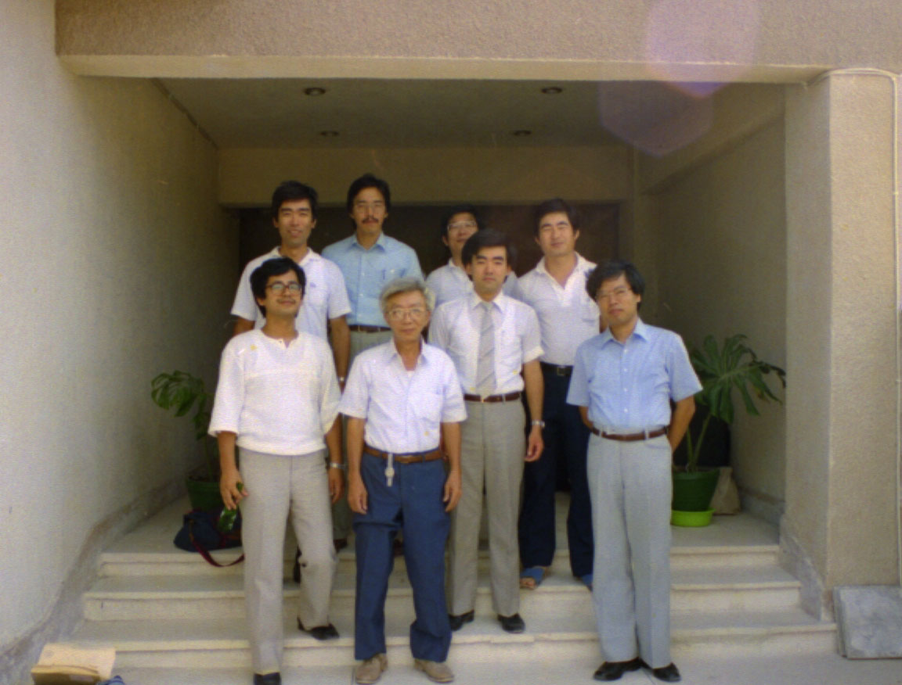
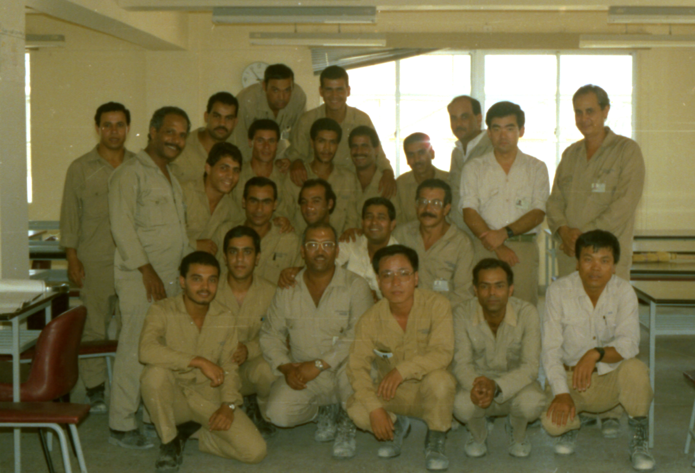

オーストラリアに家族と一緒に１９９４年７月赴任しました。 私は初めてのＢＨＰ関係者を招くクリスマスパーティーで、出席者の席札用に折り鶴の翼に出席者の 名前を書いて使いました。物凄く好評を博しました。
翼に名前を書こうと思ったのは、娘が私のＰＣで一太郎というソフトを使って、文字を斜めに書 く方法を教えてくれていたからです。 出席者全員で約４０名分を印刷し折り始めたら、最初は馬鹿にしていた家族が途中から手伝ってくれました。 その写真を撮るのを忘れていました。残念でした。
オーストラリアの北海岸には、俗称グリーンバードと言われる花があり、ポートへドランド市のロゴの中央に描かれています。栞の裏面右側にそのロゴを印刷しています。 グリーンバードはポートヘドランドのどこにでも自生している花なのですが、住人の多くはそれに気づいていません。 それは、花が緑なので全く目立たないからです。
この花を栞にして記念に持ち帰ることにしました。家族からは冷たい視線を浴びせられましたが約１０００個の花を押し花にしました。水分が多すぎて押し花を作っている最中に黒くなってしまいました。 それで、ある程度水分を抜いたら、アイロンで最後の乾燥をさせました。
その栞をＢＨＰ（オーストラリアの会社）が私の送別会を開いてくれたので、置き土産にプレゼントしました。 そしたら、多くの人が折り鶴の件を思い出してくれて私を芸術家と評し喜んでくれました。
最近２０２５年になって、家内が良い思い出だなと評価してくれました。
オソイッ！
そのグリーンバードの栞の写真です。
花の正式名称はCrotalaria cunninghamiiというマメ科の花です。
これは表になります。
 在職中の同僚が「With regard from」という表現を教えてくれました。
在職中の同僚が「With regard from」という表現を教えてくれました。そして、一番下の説明文は当時の市長がこうすると良いと教えてくれました。 「NOT FOR SALE」（非売品）と私が書いていたら、ＢＨＰの人が笑っていました。
これは裏になります。
 これがグリーンバードの写真です。大きく映すと分かりやすいですが本物は目立ちませんが、一度見つけると
どこにでも有ることが分かります。
これがグリーンバードの写真です。大きく映すと分かりやすいですが本物は目立ちませんが、一度見つけると
どこにでも有ることが分かります。
ポートヘドランド事務所で同僚ベーダーさんと一緒 鉄鉱石検定立ち合いの一つの仕事で、船が入港した時と鉄鉱石の積み込み終了後に船の沈み具合を１センチ単位で
測ります。それで鉄鉱石を何トン積んだか計量されます。一般に凡そ２０～３０万トン積み込みます。船が着岸する時の写真です。
鉄鉱石検定立ち合いの一つの仕事で、船が入港した時と鉄鉱石の積み込み終了後に船の沈み具合を１センチ単位で
測ります。それで鉄鉱石を何トン積んだか計量されます。一般に凡そ２０～３０万トン積み込みます。船が着岸する時の写真です。 １９８５年に会社の出張で、エジプト人の教育をしました。この写真は教育終了し帰国するときに記念に撮りました。
私は右から３番目でネクタイを締めています。
１９８５年に会社の出張で、エジプト人の教育をしました。この写真は教育終了し帰国するときに記念に撮りました。
私は右から３番目でネクタイを締めています。
エジプトの焼成工場メンバー集合写真です。私は手前から２列目右から２番目です。
背景が焼成工場です。右の二人が実際の操業指導者です、この二人のお陰で助かりました。 私の主な仕事は基本品質管理とこの二人とＮＫＫの調整です。品質を安定させるために物凄い苦労をしました。人生の中で一番張り切っていた時、会社の創業記念式典での記念写真です。
 私が就職して初めて配属された還元鉄部の部長（中央）が仕事でエジプトに来てくれて嬉しかったです。
私が就職して初めて配属された還元鉄部の部長（中央）が仕事でエジプトに来てくれて嬉しかったです。 ２０２０年７０歳の自画像です。
２０２０年７０歳の自画像です。